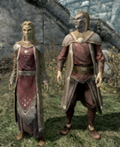
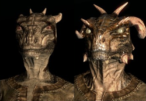
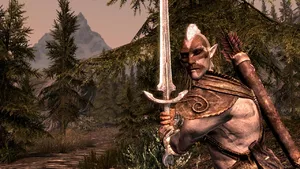
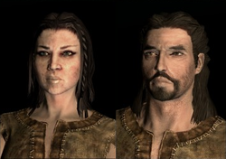
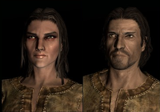
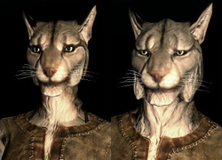
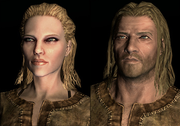
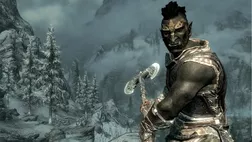
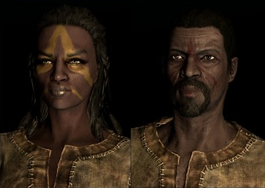

Races
Altmer
Known as "Altmer" in their homeland of Summerset Isle, the High Elves are the most gifted in the arcane arts of all the races. They can call upon their Highborn power to regenerate Magicka quickly. Altmer are one of the ten playable races in The Elder Scrolls V: Skyrim. Due to their magical affinities, the Altmer excel at mage-based classes. Characterized by their yellowish skin and amber-colored eyes, the Altmer are subjected to racism and discrimination due to their affiliation with the Third Aldmeri Dominion and the Thalmor.

Argonian
Enigmatic and intelligent, the Argonians are experts at guerrilla warfare, and their natural abilities suit their swampy homeland, Black Marsh. They have developed immunities to the diseases that have doomed many would-be explorers in the region, and they are capable of easily exploring underwater locations due to their ability to breathe water. Argonians make proficient thieves, due to their increased lockpicking and sneaking skills.

Bosmer
Bosmer (or, more commonly, Wood Elves) are the elven people of Valenwood. They prefer a simple existence, living in harmony with the land and wild animals. They are known to be the best archers in all of Tamriel and are known for their ability to command wild creatures. They make great scouts or thieves, due to their natural stealth and light footing.

Breton
Bretons are a race of both human and elven ancestry. They populate the province of High Rock. They are excellent mages with high magic resistance but have few other distinctive features. They are considered an intelligent race in Tamriel, known for a proficiency in abstract thinking, a possible reason for their adeptness in the magical arts. It is suggested that they may probably also carry Aldmer blood, accounting for their magical prowess.

Dunmer
The Dunmer, more commonly referred to as Dark Elves, are the dark skinned elven natives of the province of Morrowind. After the eruption of Red Mountain, many Dunmer fled to Skyrim, becoming refugees. They face extreme prejudices due to their elven blood. Several Dunmer have managed to make their way in Skyrim as merchants, mages, or assassins for the Dark Brotherhood.
Imperial
Natives of the cosmopolitan province of Cyrodiil, the Imperials are some of the most well-educated, wealthy and well-spoken of the races in Tamriel. Imperials are also known for their discipline and training of their citizen armies. Because of this, the Imperials have dominated Tamriel for more than 2,000 years.

Khajiit
The Khajiit are a playable race present in The Elder Scrolls V: Skyrim. Khajiit are one of the beast races which inhabit the continent of Tamriel, primarily their home province of Elsweyr. The Khajiit are Cathay and are recognizable by their feline appearance and their sly accent. Along with the Argonians, they are referred to as the beast-races of Skyrim. Because of this, Khajiit have a negative public image.

Nord
Nords are a race that were led to Skyrim by Ysgramor. They are tall, fair-haired and pale skinned humans from Atmora who are known for their incredible resistance to cold and even magical frost. They are enthusiastic warriors, and act as soldiers, mercenaries, merchants and blacksmiths all over Tamriel. Eager to augment their martial skills beyond the traditional methods of Skyrim, they excel in all manner of warfare. Above all else in Nord culture is the quest for honor and glory, and a great emphasis is placed on family values. They thrive in the cold, reminiscent of their native Atmora, and are known as a militant people by their neighbors. Nords are also naturally superior at sea, and have benefited from nautical trade since their first migrations across the sea from Atmora. They captain and crew the merchant fleets of many regions, and may be found all along Tamriel's coasts. They issue a battle cry to make their enemies flee for a short time. Nords comprise the majority of the Stormcloaks, as well as the majority of the population of Skyrim.

Orsimer
The Orsimer (more commonly known as Orcs), are the native people of the Wrothgarian and Dragontail Mountains. Despite historical misconceptions, they are in fact a variant of elves or mer, hence the name Orsimer, meaning "Pariah Folk". Following in the footsteps of Trinimac, and subsequently Malacath, Orcs have consistently held a standard as a race as some of Tamriel's greatest warriors and smiths.

Redquard
Redguards hail from the great desert province of Hammerfell. They are descended from a long line of warriors and mystic seers. Legend has it that Redguards are innately more proficient with the use of weaponry than any other race. They excel in all arts concerning blade and shield. The most naturally talented warriors in Tamriel, the dark skinned Redguards of Hammerfell seem born to battle, though their pride and fierce independence of spirit makes them more suitable as scouts or skirmishers, or as free ranging heroes and adventurers, than as rank and file soldiers. In addition to their cultural affinities for many weapon and armor styles, Redguards are also blessed with hardy constitutions and fleetness of foot.
